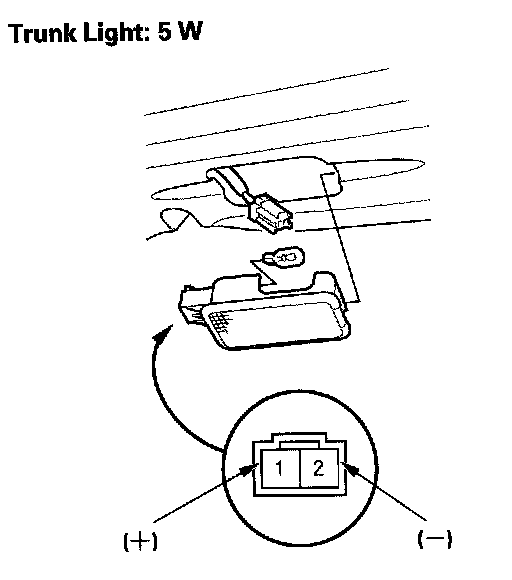

Trunk Light Test/Replacement
Trunk Light Test/Replacement1. Open the trunk lid.

2. Carefully pry out the trunk light (A).
3. Disconnect the 2P connector (B) from the light.
4. Check for continuity between the No.1 (+) and No.2 (-) terminals. There should be continuity. If there is no continuity, check the bulb. If the bulb is OK, replace the trunk light assembly.
5. Install in the reverse order of removal.